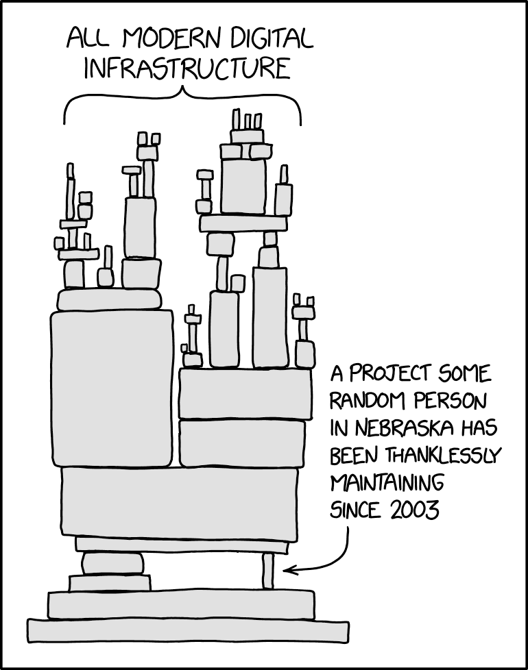

Loris Cro
Personal WebsiteMaintain it With Zig
C and C++ are kings when it comes to writing efficient software and the C ABI is the lingua franca of software interoperability, allowing C libraries to be used by almost any other language. This ubiquity, coupled with the rise of free and open source software development, has created over the course of the last 40 years a humongous collection of libraries and tools that make up what can be rightfully described as the critical infrastructure of modern software.

The reason why we can often get away with using languages like Python or JavaScript to drive resource-intensive computations, is because under the hood somebody took years to perfect a C implementation of a key procedure and shared it with the world under a permissive license.
All this infrastructure has provided immeasurable value to the software industry but it's not all sunshine and rainbows. Over the years these projects have accumulated technical debt of all kinds and maintenance has been lacking, partially because the C/C++ ecosystem isn't exactly inviting for new programmers, and partially because FOSS development sustainability is all but a solved problem.
The economics of real change
Learning how to contribute to a popular FOSS C/C++ project is not easy for a new developer. You have to learn at least one of the two languages (which already takes quite some time and effort) and how the surrounding ecosystem works. Even building a project is non-trivial if you're not already familiar with Make, CMake, Ninja, Autotools, etc; and that's just the entry point to systems programming.
Compare this to learning, say, JavaScript. While far from perfect, JS is easier to learn, build and distribute. The ecosystem is still messy but it's undeniable that it's more newbie-friendly than C/C++, and once you learn JS you can do web development (backend included, using Node), write desktop apps (Electron), mobile apps (React Native), video games and more. Why work harder to get access to a smaller pool of potential jobs when JS and web development open so many doors?
Some consider this the ultimate proof of contemporary decadence of software engineering, but that's simply the structure of economic incentives that we built for ourselves: for most people learning a high level language opens more career possibilities than learning C and, even when one wants to branch out, it's still more useful careerwise to learn Kubernetes than it is to learn CMake.
Instead of just complaining, we should think of ways to induce the change we want to see in our industry, and that starts by acknowledging that people today really need to go out of their way to learn systems programming and, in doing so, they have to deal with a lot of bad accidents of history. Until we improve this situation, I don't think we can expect anything else to change.
Rewrite it in Rust
The RIIR mantra has been floating around for a while by now. It has been repeated with full conviction by some, and used to mock Rust by others. I'm not a fan of the mocking, but at the same time I'm not convinced either that RIIR (or RIIZ for that matter) is the solution to our problems.
Rewriting every C/C++ project would surely help bypass some of the aforementioned accidents of history, but it would also take an amount of effort that I doubt the FOSS community is able to put in. First of all, rewriting from scratch is hard: even the best projects will have undocumented and untested behavior, making it very hard to catch and fix regressions, and in the best case scenario you'll produce a new implementation at best functionally equivalent to the old one, which is also why many rightfully consider full rewrites an outright dangerous idea.
On top of that, the FOSS community will never converge to a single language, which means that a deliberate rewrite effort will be uncoordinated. We have already seen how disruptive changing language can be when the Python cryptography package added a Rust dependency which in turn changed the list of supported platforms and caused a lot of community leaders to butt heads. To improve our critical infrastructure we must improve the developer experience (DX) of systems programming, but rewriting everything is not the only answer.
Instead of running away from the C/C++ ecosystem, we must find a way of moving forward that doesn't start by throwing in the trash everything that we have built in the last 40 years. C and C++ are still being moved forward by their respective committees, but progress has been really slow and very little of it has been made on the DX front. To trigger real change we need to act independently but in harmony with the C/C++ ecosystem, which is why Zig is not only a language, but also a toolchain that can compile C/C++ code.
Improving the C/C++ ecosystem
While LLVM is now transitioning into an optional dependency in the Zig compiler, it will still be part of the 40mb archive you get when you download Zig as it's very useful to deal with C/C++ code. Zig bundles a few different libcs to make cross-compilation work out of the box and exposes zig cc and zig c++, two commands that allow the use of Zig as in-place replacement for Clang. If you want to learn more, Andrew wrote a full blog post comparing Zig to vanilla Clang.
One thing that LLVM can't do, is link MachO executables for Apple Silicon (the new Apple ARM chips) and so a while ago Jakub started working on ZLD, an in-house linker that has already proven to be extremely useful on multiple different occasions while working on the Zig project.
We hope for ZLD to eventually replace lld entirely, making Zig even more independent from LLVM and helping us pursue the ultimate goal of enabling cross-compilation from any target for any target.
Build systems
If you are already using Zig to compile your C/C++ project, you can also get rid of your dependency on a build system by using zig build instead. Too many projects have a soup of undecipherable build config files that accumulate over the years because of various reasons.
Create a build.zig file and now you can build on all platforms without needing any extra dependency, not even build-essential, Xcode, or MSVC. This is already possible today and, for example, wasm3 is already supporting it.
If your build process depends on other tools, don't worry, Zig also exposes:
zig arzig ranlibzig dlltoolzig lib
A concrete example: Redis
If you want to see the Zig toolchain in action, take a look at this blog post series where we use Redis as an example of a C/C++ project that can be maintained with Zig. We start by using Zig as a drop-in replacement for the compiler, then make cross-compilation work first by battling the existing build scripts, and then by simply creating our own build.zig and getting rid of all build dependencies.
In the last post we even go one step further and add a Zig compilation unit (which even supports cross-language LTO) to implement a new command in Redis as an exercise. This is the point where adding Zig code to Redis made sense to me and, even then, the goal was adding new functionality. If you were to prefer Rust, for example, at this point you would be able to easily integrate the Zig toolchain (as a C/C++ compiler) into your Rust build process and fully enjoy Rust's cross-compilation capabilities, even while integrating with C/C++ code.
Conclusion
When it comes to Open Source software, making things more fun and worth learning can be even more important than providing an economic incentive, but systems programming has been so stagnant that having to deal with it has become cripplingly demotivating. Today we might not realize it, but this is the one true "worst mistake in computer science" because systems programming is exhilarating at its core: from gaining the ability to make the computer do things that would be impossible otherwise, to being able to ask impactful design questions that high level languages hide from you, like "where does the memory come from?"
Freeing the art of systems programming from the grips of C/C++ cruft is the only way to push for real change in our industry, but rewriting everything is not the answer. In the Zig project we're making the C/C++ ecosystem more fun and productive. Today we have a compiler, a linker and a build system, and soon we'll also have a package manager, making Zig a complete toolchain that can fetch dependencies and build C/C++/Zig projects from any target, for any target.
If you want to support our effort, we're currently half-way through our current GitHub Sponsors goal, which would allow for two more contributors to work full-time on Zig. This is also a great time to start learning Zig, watch Zig talks, and of course join a Zig community.
I think that we're at the verge of a small systems programming renaissance and I can't wait to see the Information Technology zeitgeist gain a renewed appreciation for the kind of clean, robust, and efficient software that only lower level programming can achieve.